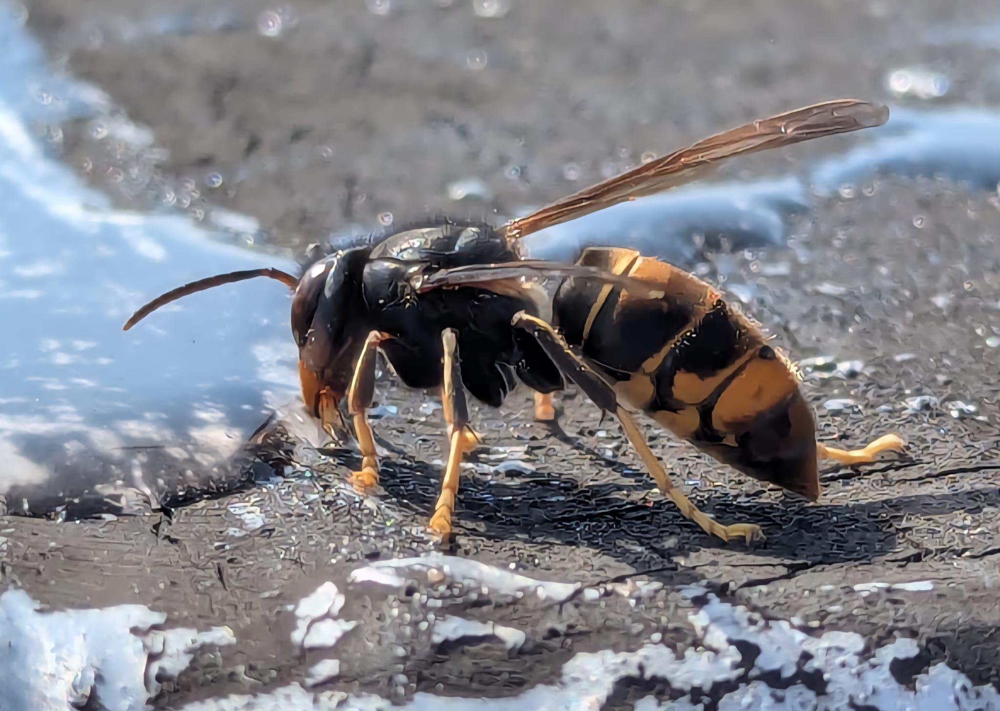

The second nest in Cobh was destroyed and sent to the National Museum as before.
A second nest has been found in Cobh. It only took 2 days to find this, compared to the 2 weeks for the first.
The nest in Cork was successfully destroyed today. The nest was sent to the Natural Museum for examination.
John Kelly, Invasive Species Programme Manager at the National Biodiversity Data Centre, was interviewed on Today with Claire Byrne this morning. You can listen to it here. He said that they are in the operational phase of managing the Cork nest. However he also said that they are currrently trapping with the assumption that there's another nest in the East Cork area. The Dublin sighting is being treated as a one-off and there is no evidence of a nest so far, but monitoring is continuing.
We are aware of media reports released in the last hour. These should not be taken as a
reflection of the situation on ground. We are investigating how these stories came about and
hope to understand more in due course.
Management of the nest in Cork
As discussed, our operational window for controlling the nest found in Cork opens on Thursday
and will close again on Sunday. We expect everything will fall into place for the safe and
effective control of this nest, along with the subsequent recovery of the nest for analysis.
However, we are not taking this for granted. We are planning everything diligently and
carefully, and double-checking our efforts. This is the first time a nest has been found in
Ireland, and it is only right that we take a robust approach, so lessons are learned and applied
to future incursions.
We are also planning genetic sequencing for the Cork nest and other samples we find around
Ireland.
Monitoring will continue
After the management of this nest, monitoring in Cork will continue until we are certain this is
the only nest in the city. We would greatly appreciate the continued vigilance of beekeepers in
the area. As we all know, beekeepers are most likely to spot the Asian Hornet, but we will also
continue our efforts to raise public awareness of this species.
Dublin sighting
As discussed, the sighting in Dublin is from the Inchicore area. Later today, I will share with
you the “Inchicore Area Alert” poster, which we will use in a targeted way on social media over
the coming days. This alert is dated today, and we will maintain this alert until we are
satisfied that no nest is present in the area.
This is an update on the AH in Cork and
Dublin.
Cork:
NPWS is continuing to monitor the situation in regard to the finding of a secondary nest. It
will be removed this week with the help of an expert from the UK.
The nest and content will be the subject of study by the Natural History Museum. Monitoring
will continue.
Dublin:
The extra monitoring around the sighting in the Dublin area will continue, but so far, it has
not led to any further sightings of hornets or a nest in that area.
The authorities will continue to deal with the situation as it arises.
After the hornets found in Cork, a further seven individuals have been trapped there. This indicates that there is likely to be a nest there.
A further individual has been confirmed from a high-quality photo taken in Dublin.
A month after identifying a hornet in a photo, a dead worker was found in one of the traps set up in response.
A surprise in Jersey where an active nest was found in January. A single hornet was found in East Sussex on 19th January, in the footwell of a car.
Today marks the start of Asian Hornet Week!
Led by the British Beekeepers’ Association (BBKA), Asian Hornet Week is a week of awareness
raising held at the beginning of September
when the insects are at their peak in terms of activity, and are most likely to be seen.
Over the next few days look out for an Asian hornet blog post on the APHA Science blog,
content on the BBKA and APHA social media
channels, and coverage in national media outlets.
Get involved!
We would be grateful for your help in raising awareness and encouraging reporting of sightings.
Any suspected sightings should ideally
be reported via the Asian hornet watch app or the online reporting form. Free alert posters and
ID sheets are available to help with awareness raising.
For more information on identification and reporting, and links to the resources mentioned
above, please visit the
Asian hornet alert page.
The final tally for the UK in 2023 is 72 nests found in 56 locations. In Jersey, there were 338 nests in 2023, compared to 170 in 2022.
NPWS confirms first discovery of a live specimen Asian Hornet in Dublin 3.